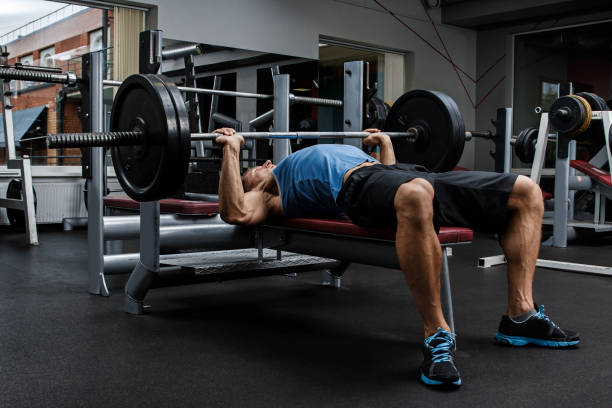

Barbell Bench Press

The barbell bench press is a classic exercise for building strength and mass in the chest muscles. To perform this exercise, lie on a flat bench with your feet flat on the ground. Grab the bar with a medium grip and lower it down to your chest. Press the bar back up to the starting position, keeping your elbows tucked in to your sides. Repeat for several reps.
Dumbbell Bench Press
The dumbbell bench press is a variation of the bench press that allows for a greater range of motion and unilateral training. To perform this exercise, lie on a flat bench with a dumbbell in each hand. Lower the dumbbells down to your chest, keeping your elbows tucked in. Press the dumbbells back up to the starting position and repeat for several reps.
Incline Bench Press
The incline bench press is a variation of the bench press that targets the upper chest muscles. To perform this exercise, lie on an incline bench with your feet flat on the ground. Grab the bar with a medium grip and lower it down to your upper chest. Press the bar back up to the starting position and repeat for several reps.
Incline Dumbbell Bench Press
The dumbbell bench press is a variation of the bench press that allows for a greater range of motion and unilateral training. To perform this exercise, lie on a flat bench with a dumbbell in each hand. Lower the dumbbells down to your chest, keeping your elbows tucked in. Press the dumbbells back up to the starting position and repeat for several reps.
Decline Press

The decline press is a variation of the bench press that targets the lower chest muscles. To perform this exercise, lie on a decline bench with your feet secured at the end. Grab the bar with a medium grip and lower it down to your lower chest. Press the bar back up to the starting position and repeat for several reps.
Machine Chest Press
The machine chest press is a great exercise for beginners or those with limited mobility. To perform this exercise, sit at a chest press machine and grab the handles with a neutral grip. Press the handles away from your chest, keeping your elbows close to your sides. Slowly release the handles back to the starting position and repeat for several reps.
Push-Up
The push-up is a classic bodyweight exercise that targets the chest, shoulders, and triceps. To perform this exercise, start in a plank position with your hands placed slightly wider than shoulder-width apart. Lower your body down towards the ground, keeping your elbows tucked in. Push your body back up to the starting position and repeat for several reps.
Machine Fly
The machine fly is a resistance machine that targets the chest muscles. To perform this exercise, sit at the machine with your back firmly against the backrest and your feet flat on the floor. Grab the handles with an underhand grip and bring your arms together in front of your chest, squeezing your chest muscles. Slowly release the handles back to the starting position and repeat for several reps.
Dumbbell Chest Fly
Chest flys are an isolation exercise that target the chest muscles. To perform this exercise, lie on a flat bench with a dumbbell in each hand. Hold the dumbbells above your chest with your arms extended. Lower the dumbbells out to the sides, keeping a slight bend in your elbows. Bring the dumbbells back together above your chest and repeat for several reps.